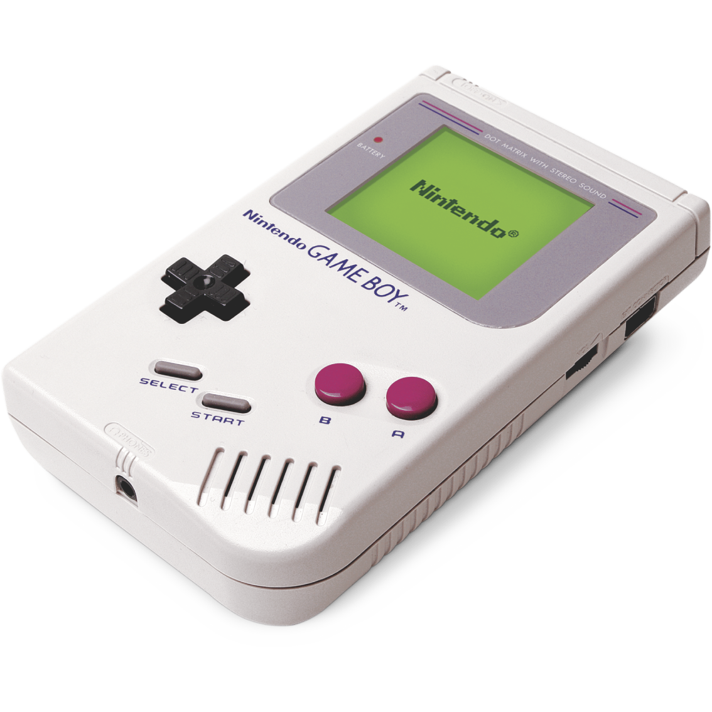
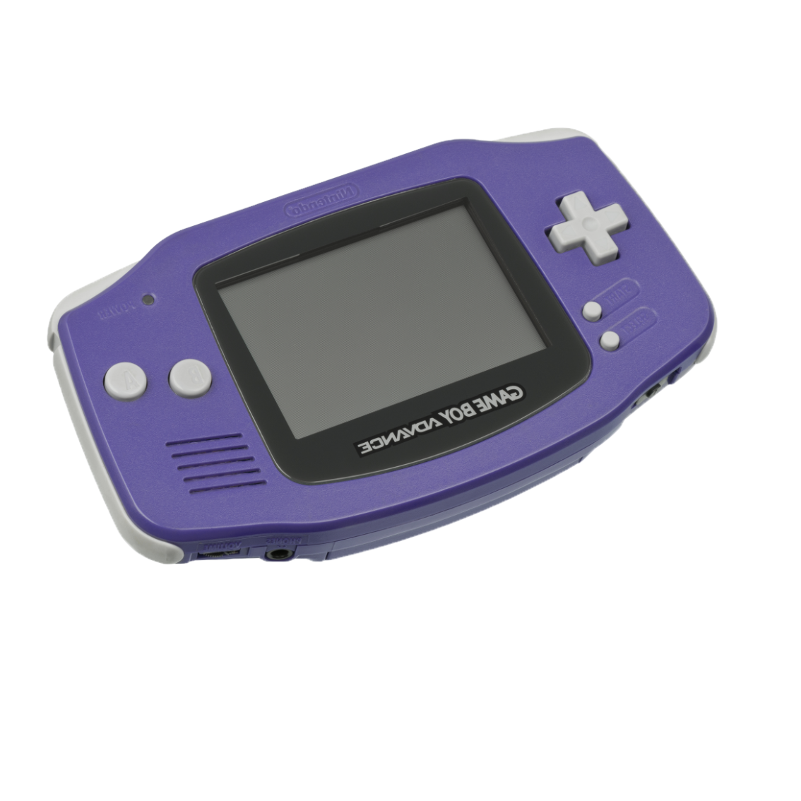
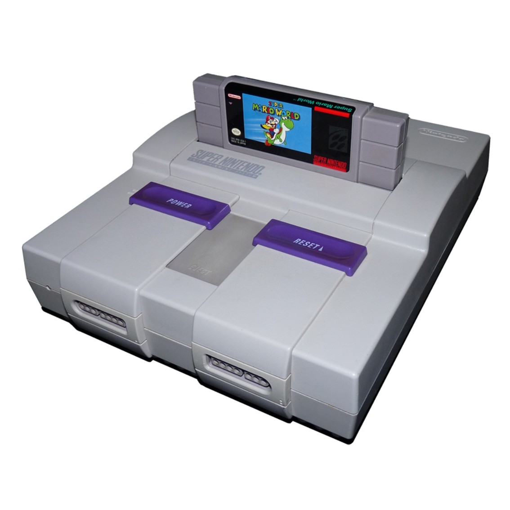
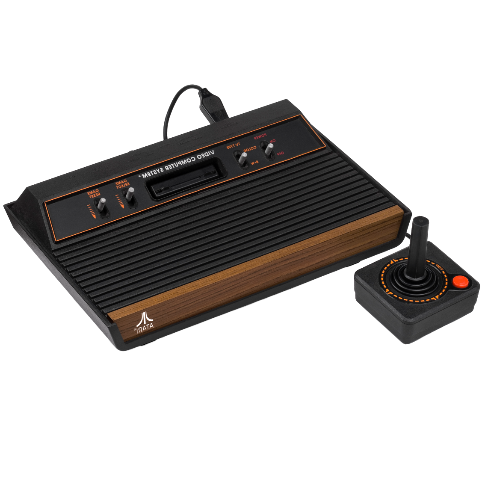
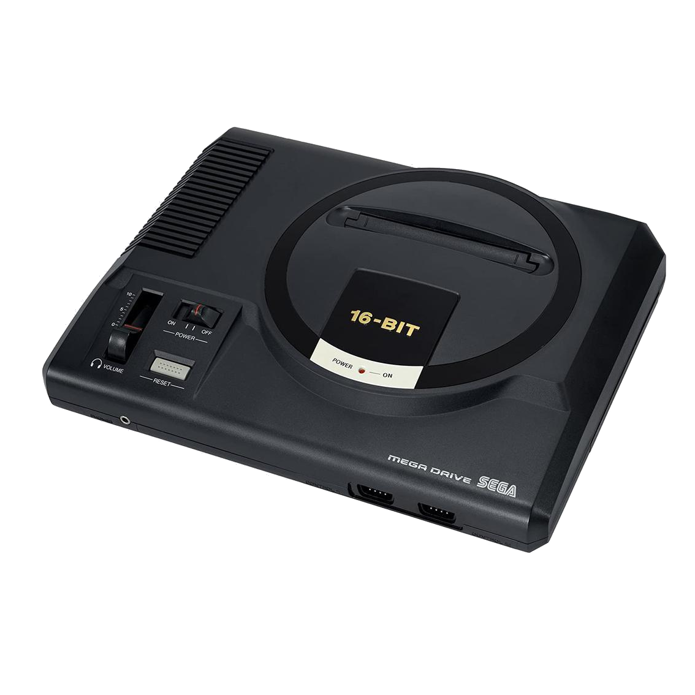
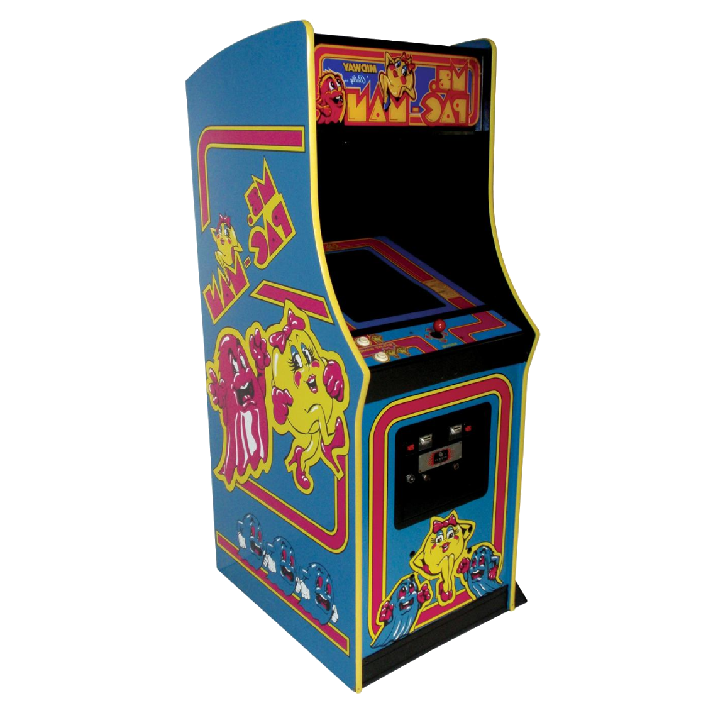

¡Bienvenidos a "Gank Tank" para Gameboy! Prepárate para sumergirte en una emocionante aventura llena de acción y estrategia en un mundo futurista y distópico. Este increíble videojuego ha sido creado por los talentosos desarrolladores Nacho Herrero y Adrian Morato, quienes han combinado su pasión por los videojuegos y su habilidad en programación para brindarte una experiencia de juego única.
La mecánica de juego te sumergirá en intensas batallas. Tu misión será utilizar estratégicamente tu tanque para derrotar a los enemigos, evadir ataques y aprovechar al máximo las habilidades especiales de tu vehículo. ¡Prepárate para enfrentarte a enemigos controlados por la IA que pondrán a prueba tus habilidades al máximo!

En Gameboy podrás disfrutar de una amplia variedad de juegos emocionantes. Desde aventuras clásicas hasta desafíos de plataformas, hay algo para todos los gustos. Juegos como "Super Mario Land" te llevarán a través de mundos fantásticos llenos de obstáculos y enemigos. Si prefieres la acción, "Tetris" te desafiará a encajar las piezas mientras caen en una pantalla interminable. Pero si estás buscando una experiencia única y llena de acción, no puedes perderte "Gank Tank". Este increíble juego programado en C y creado por Nacho Herrero y Adrián Morato
En GBA encontrarás una amplia biblioteca de juegos para disfrutar. Sumérgete en el mundo de los Pokémon con títulos como "Pokémon FireRed" y "Pokémon LeafGreen". Si eres fanático de los juegos de plataformas, no puedes perderte clásicos como "Super Mario Advance" y "Metroid Fusion". Además, "The Legend of Zelda: The Minish Cap" te llevará a una emocionante búsqueda llena de misterios y desafíos.
En SNES descubrirás una increíble selección de juegos. Sumérgete en el maravilloso mundo de los RPG con "Final Fantasy VI" y "Chrono Trigger". Embárcate en aventuras épicas con "The Legend of Zelda: A Link to the Past" y "Super Metroid". Además, no puedes dejar de jugar clásicos de plataformas como "Super Mario World" y "Donkey Kong Country".
En Atari 2600 descubrirás una rica selección de juegos clásicos que te transportarán a los inicios de la industria del videojuego. Sumérgete en la diversión retro con títulos icónicos como Space Invaders, Pac-Man y Pitfall. Disfruta de emocionantes aventuras, desafíos de habilidad y horas de entretenimiento, todo con el encanto original de la consola Atari 2600.
En Mega Drive encontrarás un tesoro de emocionantes juegos clásicos que te transportarán de vuelta a la era dorada de los videojuegos. Sumérgete en la acción desenfrenada de títulos icónicos como Sonic the Hedgehog, Streets of Rage y Golden Axe. Disfruta de aventuras épicas, combates intensos y desafiantes plataformas, todo con la autenticidad y el encanto de la consola original.
En Arcade encontrarás una increíble colección de juegos clásicos que te transportarán a la época dorada de los arcades. Disfruta de títulos icónicos como Pac-Man, Street Fighter II y Tetris, así como de gemas menos conocidas pero igualmente emocionantes. MAME te ofrece la oportunidad de revivir la magia de los juegos retro, ya sea en máquinas recreativas o en consolas clásicas.
¿Quieres estar al dia de nuestras novedades? ¡No dudes en suscribirte!
- Av. de l'Anselm de Riu, 10, Santa Coloma de Gramenet, Barcelona
- Santa Coloma de Gramanet 08924
- (+34) 398 243 769
- retrowire@gmail.com